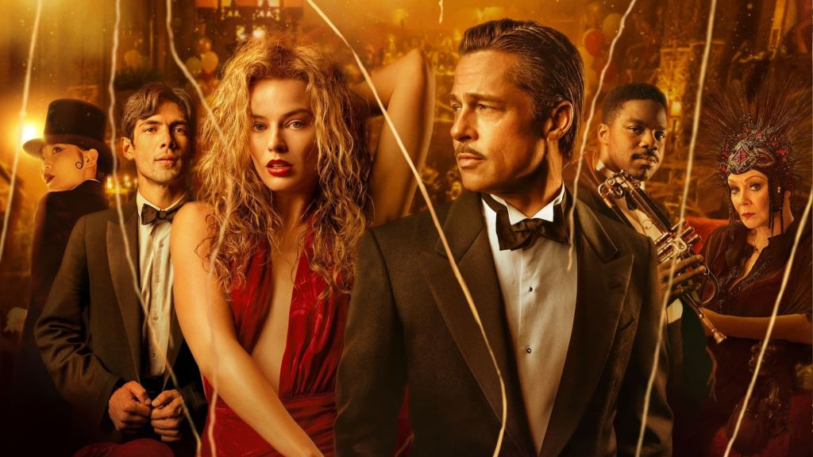
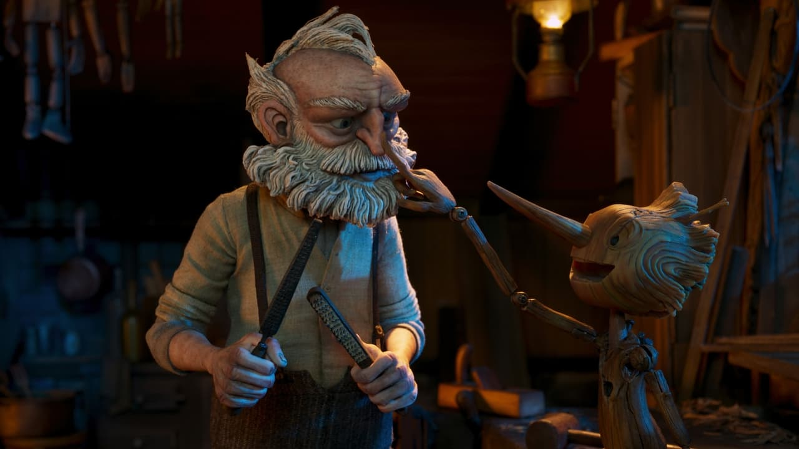
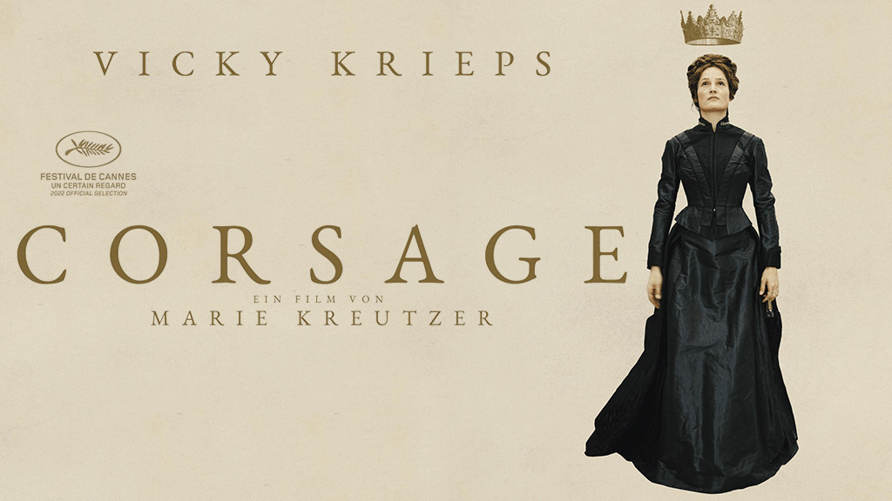
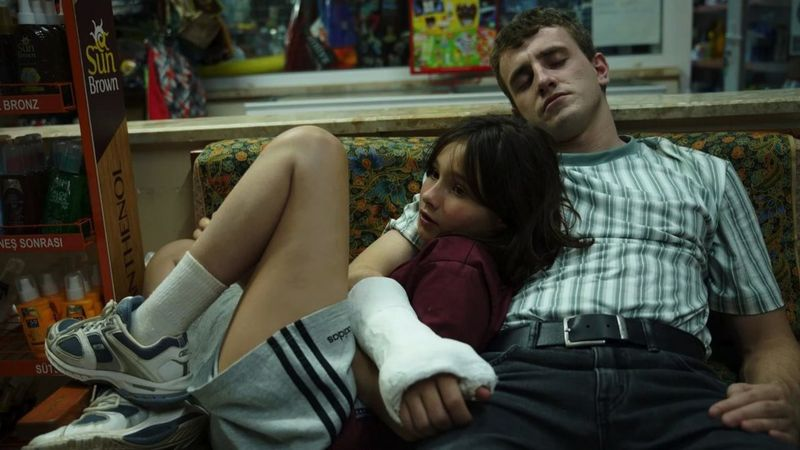
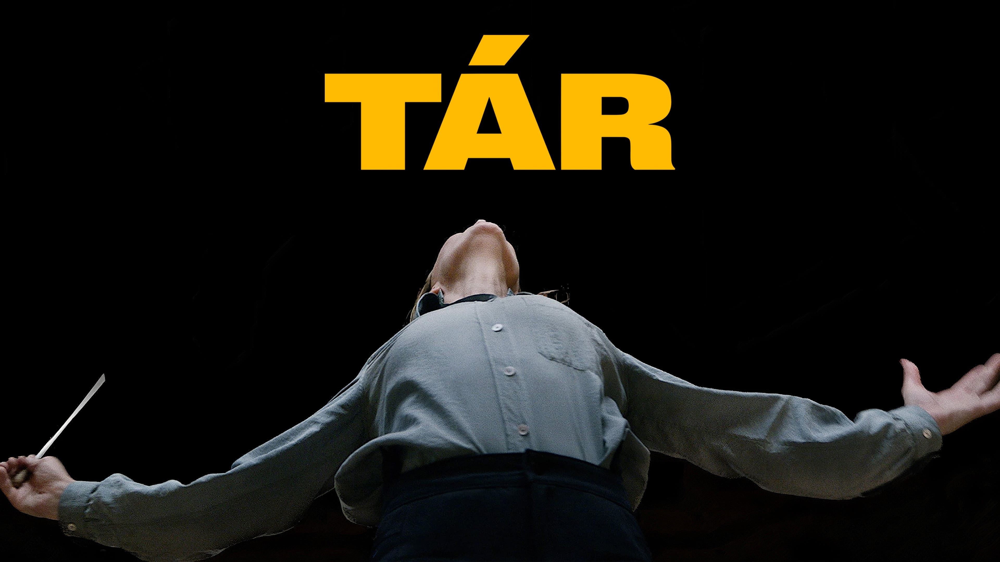
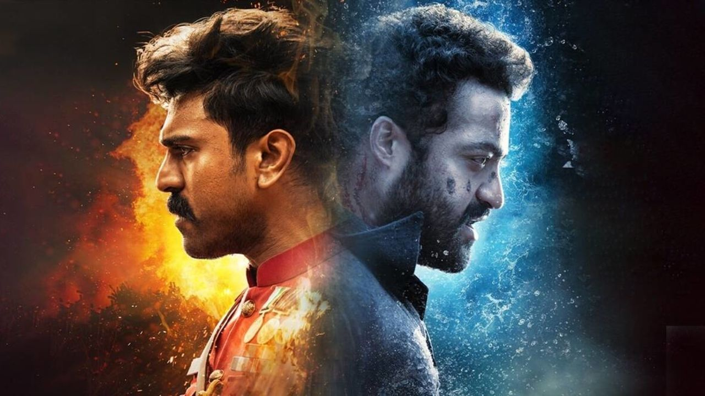

15 найкращих фільмів 2022
2022-ий не був найкращим роком для походів у кінотеатри. Сеанси часто скасовували через повітряні тривоги, а потім - через відключення електрики, для багатьох кінорозваги взагалі стали недоречними. Але деякі люди знаходили тимчасову розраду у можливості поринути у вигаданий світ. Якщо ви серед них, тоді ця добірка - саме для вас.
1. Все всюди і все одразу (Everything Everywhere All at Once)
 Творчий дует режисерів Деніеля Квана та Деніеля Шайнерта, відомий як Деніелс, 2016 року заявив про себе чорною комедією "Людина - швейцарський ніж" з Денієлом Редкліффом у головній ролі.
Цього разу вони створили фантастичну кунгфу-комедію про жінку, яка намагається розібратися з податками, а потрапляє у мультивсесвіт, де вона може існувати в різних версіях самої себе.
Головну роль виконала китайсько-малазійсько-американська акторка Мішель Єо, відома по фільмах "Завтра не помре ніколи", "Мемуари гейші", "Тигр підкрадається, дракон ховається". Роль лиходійки-бухгалтерки зіграла Джеймі Лі Кертіс.
Доволі рідкісна ситуація, коли артфільм змушує глядачів плакати і водночас збирає купу грошей. Касові збори стрічки у світі становлять понад 100 мільйонів доларів.
Творчий дует режисерів Деніеля Квана та Деніеля Шайнерта, відомий як Деніелс, 2016 року заявив про себе чорною комедією "Людина - швейцарський ніж" з Денієлом Редкліффом у головній ролі.
Цього разу вони створили фантастичну кунгфу-комедію про жінку, яка намагається розібратися з податками, а потрапляє у мультивсесвіт, де вона може існувати в різних версіях самої себе.
Головну роль виконала китайсько-малазійсько-американська акторка Мішель Єо, відома по фільмах "Завтра не помре ніколи", "Мемуари гейші", "Тигр підкрадається, дракон ховається". Роль лиходійки-бухгалтерки зіграла Джеймі Лі Кертіс.
Доволі рідкісна ситуація, коли артфільм змушує глядачів плакати і водночас збирає купу грошей. Касові збори стрічки у світі становлять понад 100 мільйонів доларів.
2. Топ Ґан: Меверік (Top Gun: Maverick)
 "Найкращий стрілець" тричі потрапляв до списку найочікуваніших фільмів року, спочатку прем'єру продовження культового бойовика 1986 року планували на 2019-й.
Але нарешті прихильники надзвукового пілотажу отримали задоволення, на яке вони так довго очікували.
Коли Піт "Маверік" Мітчелл (Том Круз) повертається до елітної школи пілотів-винищувачів ВМС США, блокбастер стає не просто захопливою демонстрацією фігур вищого пілотажу, а й зворушливою, гірко-солодкою драмою про дорослішання.
"Топ Ґан" став найуспішнішим фільмом року. Цьому, без сумніву, сприяв і той факт, що Том Круз сьогодні виглядає краще, ніж у 1986 році.
"Найкращий стрілець" тричі потрапляв до списку найочікуваніших фільмів року, спочатку прем'єру продовження культового бойовика 1986 року планували на 2019-й.
Але нарешті прихильники надзвукового пілотажу отримали задоволення, на яке вони так довго очікували.
Коли Піт "Маверік" Мітчелл (Том Круз) повертається до елітної школи пілотів-винищувачів ВМС США, блокбастер стає не просто захопливою демонстрацією фігур вищого пілотажу, а й зворушливою, гірко-солодкою драмою про дорослішання.
"Топ Ґан" став найуспішнішим фільмом року. Цьому, без сумніву, сприяв і той факт, що Том Круз сьогодні виглядає краще, ніж у 1986 році.
3. Я червонію (Turning Red)
 Темою дорослішання цей новий анімаційний фільм від Pixar нагадує іншу стрічку студії - "Думками навиворіт". Утім, він є унікальним з багатьох сторін: це - перший фільм студії, режисеркою якого стала жінка і сюжет якого розгортається у Канаді.
Це також перший мультфільм Pixar, головна героїня якого - дівчинка з азійської родини.
Мейлін або Мей (Розалі Чанг) - старанна школярка, яка перетворюється на величезну кудлату червону панду щоразу, коли переживає стрес.
З огляду на те, що Мей — 13-річна канадка китайського походження, а дія фільму відбувається у Торонто на початку 2000-х років, "Я червонію" містить чимало автобіографічних деталей сценаристки й режисерки Домі Ші.
У вигляді панди Мей така мила, що тим, в кого є маленькі діти просто обов'язково потрібно замовити м'яку червону іграшку панди.
Темою дорослішання цей новий анімаційний фільм від Pixar нагадує іншу стрічку студії - "Думками навиворіт". Утім, він є унікальним з багатьох сторін: це - перший фільм студії, режисеркою якого стала жінка і сюжет якого розгортається у Канаді.
Це також перший мультфільм Pixar, головна героїня якого - дівчинка з азійської родини.
Мейлін або Мей (Розалі Чанг) - старанна школярка, яка перетворюється на величезну кудлату червону панду щоразу, коли переживає стрес.
З огляду на те, що Мей — 13-річна канадка китайського походження, а дія фільму відбувається у Торонто на початку 2000-х років, "Я червонію" містить чимало автобіографічних деталей сценаристки й режисерки Домі Ші.
У вигляді панди Мей така мила, що тим, в кого є маленькі діти просто обов'язково потрібно замовити м'яку червону іграшку панди.
4. Фабельмани (The Fabelmans)
 Давно не секрет, що нещасливі сім'ї у фільмах Стівена Спілберга завжди оповідають про його власну, але у частково автобіографічній стрічці "Фабельмани" він нарешті говорить про це відкрито, без інопланетян та інших метафор, і створює один із найбільш емоційно чесних та найменш сентиментальних творів.
У центрі сюжету - підліток Семмі (Габріель Лабель), альтер-его Спілберга, його розчарована у житті, але наділена багатою фантазією мати (Мішель Вільямс) і його сухий прагматик батько (Пол Дано). Останні двоє такі різні, що їхнє розлучення виглядає неминучим.
Семмі знімає фільми, які розчулюють своєю дотепністю. Озираючись на свою родину дорослими очима, Спілберг бачить батьків з усіма їхніми недоліками, але наповнює фільм теплотою, розумінням та любов'ю.
Давно не секрет, що нещасливі сім'ї у фільмах Стівена Спілберга завжди оповідають про його власну, але у частково автобіографічній стрічці "Фабельмани" він нарешті говорить про це відкрито, без інопланетян та інших метафор, і створює один із найбільш емоційно чесних та найменш сентиментальних творів.
У центрі сюжету - підліток Семмі (Габріель Лабель), альтер-его Спілберга, його розчарована у житті, але наділена багатою фантазією мати (Мішель Вільямс) і його сухий прагматик батько (Пол Дано). Останні двоє такі різні, що їхнє розлучення виглядає неминучим.
Семмі знімає фільми, які розчулюють своєю дотепністю. Озираючись на свою родину дорослими очима, Спілберг бачить батьків з усіма їхніми недоліками, але наповнює фільм теплотою, розумінням та любов'ю.
5. Після Янга (After Yang)
 Когонада без перебільшення - геній. Режисер стильної драми "Колумб" (2017) і головна творча сила вишуканого серіалу Apple TV+ "Пачінко". Він вдихає нове життя та візуальний блиск у доволі банальний сюжет про робота з почуттями.
Колін Фаррелл грає батька, який намагається відремонтувати улюбленого робота своєї доньки Янга (Джастін Х. Мін), який вочевидь має проблиски людської душі.
Фільм про події, вочевидь, недалекого майбутнього приголомшує стилем і візуальною красою сцен, від перших кадрів до несподіваного фіналу.
Когонада без перебільшення - геній. Режисер стильної драми "Колумб" (2017) і головна творча сила вишуканого серіалу Apple TV+ "Пачінко". Він вдихає нове життя та візуальний блиск у доволі банальний сюжет про робота з почуттями.
Колін Фаррелл грає батька, який намагається відремонтувати улюбленого робота своєї доньки Янга (Джастін Х. Мін), який вочевидь має проблиски людської душі.
Фільм про події, вочевидь, недалекого майбутнього приголомшує стилем і візуальною красою сцен, від перших кадрів до несподіваного фіналу.
6. Банши Інішерина (The Banshees of Inisherin)
 Режисер Мартін МакДона ("Три білборди за межами Еббінга, Міссурі") не зраджує своїй традиції чорного гумору і влучних відточених діалогів. Але у новому фільмі він замінює насильство та агресивну іронію своїх попередніх фільмів ("Залягти на дно в Брюґґе" та "Сім психопатів") на дещо сумніше та поетичніше.
У центрі сюжету комедійної драми - суперечка між двома друзями, порядними на позір чоловіками (Колін Фаррел і Брендан Ґлісон), що відбувається у маленькому пабі на крихітному ірландському острові.
Простий сюжет згодом переростає у доволі моторошну історію. До того ж фільм знову нагадує глядачеві, яким блискучим актором є Колін Фаррелл.
Режисер Мартін МакДона ("Три білборди за межами Еббінга, Міссурі") не зраджує своїй традиції чорного гумору і влучних відточених діалогів. Але у новому фільмі він замінює насильство та агресивну іронію своїх попередніх фільмів ("Залягти на дно в Брюґґе" та "Сім психопатів") на дещо сумніше та поетичніше.
У центрі сюжету комедійної драми - суперечка між двома друзями, порядними на позір чоловіками (Колін Фаррел і Брендан Ґлісон), що відбувається у маленькому пабі на крихітному ірландському острові.
Простий сюжет згодом переростає у доволі моторошну історію. До того ж фільм знову нагадує глядачеві, яким блискучим актором є Колін Фаррелл.
7. Вавилон (Babylon)
 Амбітна феєрія режисера і сценариста Дам'єна Шазелла ("Ла-Ла Ленд") про 1920-ті роки в Голлівуді, коли на місце німого кіно прийшов звук, як і всі епоси розгалужена і хаотична. Але яскраві декорації і блискуча акторська гра компенсують будь-які сюжетні недоліки, як-от явний перебір з кількістю кінцівок фільму. Марго Роббі у ролі юної шаленої акторки Неллі ЛаРой - завзята і симпатична. Вона з перших кадрів вривається в оповідь, захопивши увагу гостей вечірки, повної джазу, наркотиків, оголених тіл і продюсерів, які створюють зірок. Бред Пітт грає комічну роль зірки німого кіно, який потрапив у пастку старих фільмів. Сцена зйомок однієї з його картин - це несамовито смішний епізод, який цілком міг би стати окремим фільмом. Герої і різноманітні сюжетні лінії "Вавилону" об'єднуються у бравурну оповідь, яка занурює у свій світ і натякає на те, що темна сторона Голлівуду та його чарівні творіння завжди були тим самим.
8. Скляна цибулина. Ножі наголо 2 (Glass Onion: A Knives Out Mystery)
 Детектив Бенуа Блан мусить розгадати ще одне таємниче вбивство у чарівному сіквелі режисера Раяна Джонсона "Ножі наголо".
Як і у першому фільмі, підозрюваними є компанія заможних американців, але цього разу це - технологічні магнати та інфлюенсери соцмереж (Едвард Нортон, Кейт Хадсон, Жанель Моне, Дейв Баутіста), які розважаються на приватному грецькому острові.
Закручений сюжет можливо не такий геніальний, як у попередньому фільмі, але Джонсон докладає максимум зусиль, щоб зробити "Ножі наголо 2" таким же зухвалим, тягучим і кумедним, як південний акцент Деніела Крейга.
Детектив Бенуа Блан мусить розгадати ще одне таємниче вбивство у чарівному сіквелі режисера Раяна Джонсона "Ножі наголо".
Як і у першому фільмі, підозрюваними є компанія заможних американців, але цього разу це - технологічні магнати та інфлюенсери соцмереж (Едвард Нортон, Кейт Хадсон, Жанель Моне, Дейв Баутіста), які розважаються на приватному грецькому острові.
Закручений сюжет можливо не такий геніальний, як у попередньому фільмі, але Джонсон докладає максимум зусиль, щоб зробити "Ножі наголо 2" таким же зухвалим, тягучим і кумедним, як південний акцент Деніела Крейга.
9. Піноккіо (Guillermo Del Toro: Pinokio)
 Ви, мабуть, ніколи не бачили, як Піноккіо танцює для Муссоліні. Похмурий, зворушливий, але життєствердний варіант класичної казки про ляльку, яка стала хлопчиком, у виконанні Гільєрмо дель Торо має більше спільного з його "Лабіринтом Фавна" та "Формою води", ніж знайома усім версія "Діснея". За допомогою яскравих, майстерно виготовлених ляльок і приголомшливій стоп-моушн-анімації він і його співрежисер Марк Густафсон створюють Джеппетто, чоловіка, чий маленький син загинув від бомби під час Першої світової війни. Десятиліття потому, Джеппетто, який спився від горя, раптом вирізає з дерева Піноккіо, довгоносу істоту, сповнену радості, яка починає кликати Джеппетто татусем, а пізніше вирушає у потойбічний світ, де знайомиться з Берегинею і її сестрою Смертю (обидві ролі озвучила Тільда Свінтон). Важко уявити більш тривожну версію відомої казки. У певний момент Піноккіо змушений виступати перед лідером фашистів - або кимось таким же знаменитим і багатим.
10. Доктор Стрендж: у мультивсесвіті божевілля (Doctor Strange in the Multiverse of Madness)
 "Доктор Стрендж", вочевидь, поступається у першості на найкращу науково-фантастичну феєрію року фільму "Все всюди й одразу", але це не робить його менш розважальним і захопливим.
Цей найдивніший і найстрашніший з блокбастерів Marvel зняв режисер Сем Реймі, відомий трилогіями "Зловісні мерці" і "Людина павук" з Тобі Магвайром.
Реймі наповнює екран своєю любов'ю до класичних коміксів про супергероїв і фільмів жахів. Утім, фільм про летючих зомбі та зеленошерстих мінотаврів не позбавлений і серйозних роздумів - про сім'ю, віру та жертовність.
"Доктор Стрендж", вочевидь, поступається у першості на найкращу науково-фантастичну феєрію року фільму "Все всюди й одразу", але це не робить його менш розважальним і захопливим.
Цей найдивніший і найстрашніший з блокбастерів Marvel зняв режисер Сем Реймі, відомий трилогіями "Зловісні мерці" і "Людина павук" з Тобі Магвайром.
Реймі наповнює екран своєю любов'ю до класичних коміксів про супергероїв і фільмів жахів. Утім, фільм про летючих зомбі та зеленошерстих мінотаврів не позбавлений і серйозних роздумів - про сім'ю, віру та жертовність.
11. Корсаж (Corsage)
 Холодна і жорстка гра Вікі Кріпс ("Фантомна нитка") у ролі імператриці Єлизавети Баварської ідеально підходить для цієї розкішної історичної драми із зухвалими відсиланнями у сучасність. Події розгортаються в 1877 році, коли Єлизаветі виповнюється 40, вона вже далеко не та популярна красуня, якою була у молоді роки, однак відмовляється це визнати. Австрійська режисерка Марі Кройцер представляє свою героїню як незалежну жінку в епоху, ще дуже далеку від сучасності, але водночас поєднує її із нашими днями за допомогою саундтрека з поп-пісень. Цей сміливий режисерський хід надає фільму динаміки і водночас відображає внутрішню боротьбу жінки, яка намагається втекти від обмежень соціальних очікувань та свого часу. Сюжет кардинально відходить від історичних фактів і пропонує новий фінал - не обов'язково щасливий для самої Єлизавети, але такий, що відповідає її свавільній натурі та логіці цього сміливого фільму.
12. Післязавтра (Aftersun)
 Дебютна робота режисерки Шарлотти Веллс - це історія дорослішання та хвилююче зображення крихких стосунків між батьком і дочкою. Пол Мескаль ("Нормальні люди") зворушливий у ролі Калума, який розлучився з матір'ю своєї доньки і намагається зблизитися з 11-річною Софі, чию роль дуже природно виконала Френкі Коріо. Вони вирушають у відпустку на дещо занедбаний турецький курорт, де купаються, сидять на пляжі та їдять морозиво. Софі вже достатньо доросла, щоб зрозуміти, що її батько - глибоко нещасливий, але все ще мала, щоб побачити причини цього. Попри зростаючу напругу між головними героями, ця пронизлива, чуттєва драма немає ані сюжетного розвитку, ані приголомшливої розв'язки. Фільм нещодавно здобув нагороду Британської незалежної кінопремії як найкращий британський фільм.
13. Рішення піти (Decision to Leave)
 Через шість років після тріумфу "Служниці" Пак Чхан Ук повертається з неонуарним трилером "Рішення піти". Сюжет фільму - у найкращих традиціях "Запаморочення" Альфреда Гічкока та "Основного інстинкту" Пола Верговена, коли детектив закохується у підозрювану.
Дія відбувається у південнокорейському місті Пусан, де педантичний детектив Хе-джін розслідує дивну смерть літнього чоловіка, у якого залишається красива молода вдова Со-рей.
Те, що головна героїня - китайська іммігрантка, додає ще один шар мовних та культурних непорозумінь. Підозри починають падати на неї, але Хе-джін вже занадто сильно перебуває під впливом її чар, щоби усвідомити це.
Це - одна з найкращих режисерських робіт року, в якій кожен кадр скомпонований для максимального ефекту. Нетривіальні композиції, плани зблизька та просторі міські та сільські краєвиди захоплюють глядача, але ніколи не відволікають від напруженої сюжетної лінії.
Можливо, Пак Чхан Ук і черпає натхнення у безсмертній класиці Гічкока, але він безперечно додає до жанру своїх впізнаваних штрихів.
Через шість років після тріумфу "Служниці" Пак Чхан Ук повертається з неонуарним трилером "Рішення піти". Сюжет фільму - у найкращих традиціях "Запаморочення" Альфреда Гічкока та "Основного інстинкту" Пола Верговена, коли детектив закохується у підозрювану.
Дія відбувається у південнокорейському місті Пусан, де педантичний детектив Хе-джін розслідує дивну смерть літнього чоловіка, у якого залишається красива молода вдова Со-рей.
Те, що головна героїня - китайська іммігрантка, додає ще один шар мовних та культурних непорозумінь. Підозри починають падати на неї, але Хе-джін вже занадто сильно перебуває під впливом її чар, щоби усвідомити це.
Це - одна з найкращих режисерських робіт року, в якій кожен кадр скомпонований для максимального ефекту. Нетривіальні композиції, плани зблизька та просторі міські та сільські краєвиди захоплюють глядача, але ніколи не відволікають від напруженої сюжетної лінії.
Можливо, Пак Чхан Ук і черпає натхнення у безсмертній класиці Гічкока, але він безперечно додає до жанру своїх впізнаваних штрихів.
14. Тар (Tár)
 Кейт Бланшетт грає Лідію Тар, всесвітньо визнану диригентку та композитора, яка стає першою в історії жінкою-диригентом Берлінського філармонічного оркестру. Вона дає інтерв'ю, випускає книжки, викладає і на новій посаді приступає до репетицій симфонії № 5 Малера, а також піклується про свою партнерку - першу скрипку оркестру - і маленьку прийомну дочку. Але коли одна з її колишніх підопічних накладає на себе руки, бездоганна репутація Лідії опиняється під загрозою. Важко уявити, що дві з половиною години розмов про класичну музику, спонсорство мистецтва та гендерну політику можуть бути такими напруженими і водночас захопливими.
15. РРР (RRR)
 "RRR" - це не просто один із найкращих фільмів року - це кілька найкращих фільмів року. Шедевр індійського режисера Ш.Ш. Раджамулі, знятий мовою телугу, - це надихаюча історична драма про боротьбу за незалежність Індії проти британського правління в 1920-х роках. Це блискучий романтичний мюзикл, гідний золотої доби Голлівуду, кримінальний трилер про двох подвійних агентів, які стають друзями, шалений бойовик і приголомшливий епос про супергероїв. Але найдивовижніше це те, що всі ці жанри та жанрові відтінки бездоганно поєднуються, оповідаючи потужну історію. "RRR" на 2022 рік є найдорожчим індійським фільмом.